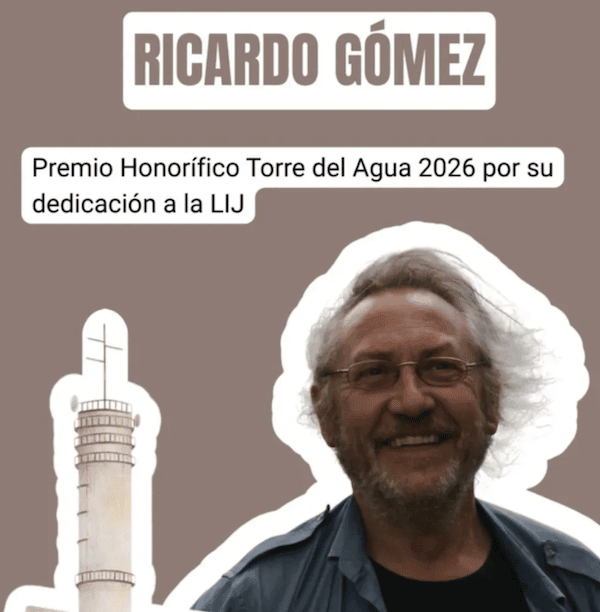

Es 7 de febrero, o sea, 7 del 2. Cumplo 72 años el 7/2, lo que es una notoriedad que nunca volverá a ocurrirme, una coincidencia que solo se da con algunas personas, y solo una vez en su vida.
Quizá esta coincidencia, y no otro mérito, sea el motivo de que el FESTILIJ26 me entregue, este mismo día, el premio "Torre del Agua", dicen que como reconocimiento por mi dedicación a la Literatura Infantil y Juvenil. Ya he dicho que lo acepto con una mezcla de orgullo y de humildad. Un premio no le hace a uno mejor de lo que es, pero se agradece por ser honorífico y porque hay detrás colegas de la profesión.
En realidad, escribo esto antes de la entrega del premio. Quizá en otro post o en otros sitios cuente cómo fue.
De momento, me doy satisfecho con esta anotación. ¡GRACIAS!
